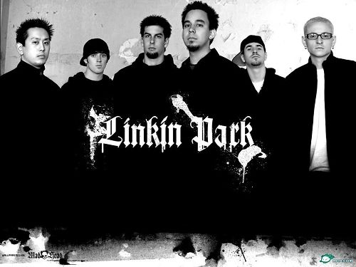
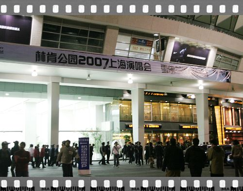
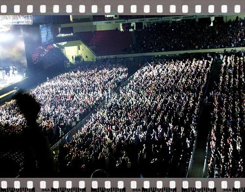
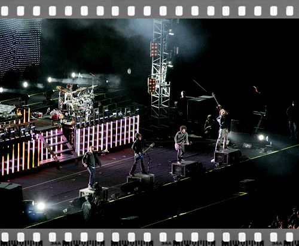
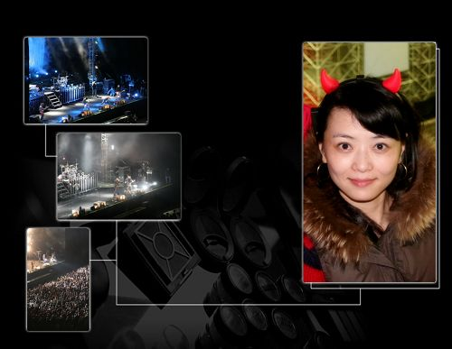

两年前开始听Linkin Park的碟，虽然从开始接受到喜欢上Linkin Park过程不太长，可是到了现场才知道自己连个伪歌迷都算不上，音乐刚刚响起时便是潮水般响亮跟唱。“温故”的歌占了80%，即便新歌还是有很多人能清晰的唱出歌词。基本上都是年轻人，疯狂而有序，除了位置上的死角，几乎场内“站”满了人。
一个多月前在网上预定了演唱会的票，那时价格适中的600、800元票价基本售空，买了400元价位的票，选了挨着600元区域的座位号。最贵的票价是1600元，最便宜的100元。还好，票价并不比国内歌星开演唱会的高，不知道欧美看场这样的演出票价多少？
目前为止看过三次摇滚现场演唱会，一次是92年前后吧，《唐朝》乐队到南京演出，去看的人大多是学生。另一次好象是95年，忘了是哪个品牌的“face to face”活动，在南航看的北京的一个摇滚乐队。Linkin Park是第三次。摇滚演唱会总是沸腾的，世界上最吵的声音莫过于11月18日晚的上海虹口足球场。遗憾的是Linkin Park只演出了一个多小时，前面不知国内哪个摇滚乐队用了一个小时来热场，与Linkin Park朴素的外型相比，国内这支乐队的舞台表演有点马戏团的感觉。这次演唱会由“雪弗莱”出资邀请，会场外面具有优势的停车点都留给了雪弗莱车友，平时不起眼的小车，这个晚上也颇神气呢。
续：这场演唱会之后仍然意犹未尽，反复听碟子外又看了他们2004年在Texas的现场，整个儿演完1：06，看来摇滚是既需要体力又需要激情的演出，Linkin Park不完全是摇滚，其中也加入饶舌、DJ等元素，使得他们的作品吸引更多人。2000、2001年Linkin Park刚出道就红了，可是在2005年才邂逅Linkin Park。音乐是储藏记忆的盒子，可以进行时光穿梭。

Biography by MacKenzie Wilson
Old-school hip-hop, traditional classic rock, and spooling electronic vibes were the initial factors behind the building of the alternative metal quintet Linkin Park. The band's Southern Californian musical roots were also an underlying basis, for drummer Rob Bourdon, guitarist Brad Delson, and MC/vocalist Mike Shinoda formed a tight friendship while still in high school. Shortly after graduation, art student and DJ Joseph Hahn hooked up with bassist Dave "Phoenix" Farrell and Shinoda for the band Xero. Hybrid Theory came later, but the band opted on the name Linkin Park when singer Chester Bennington was the last piece added to the band in 1999. Soon the band became a noticeable face at the Whisky as well as favorites in and around Los Angeles. Zomba Music's Jeff Blue was one of the few who didn't turn the band down for a contract at the turn of the millennium — Linkin Park signed to Warner Bros. after being turned down three times in late 1999 and got to work on their debut album. Taking a piece from their past, they named the album Hybrid Theory. It was released in fall 2000 and it showcased their likes for fellow alternative acts such as the Deftones, the Roots, Aphex Twin, and Nine Inch Nails. The Dust Brothers also collaborated on the record, as well as producer Don Gilmore (Pearl Jam, Eve 6, Tracy Bonham). Singles such as "Crawling" and "One Step Closer" were massive radio hits and video favorites among the TRL crowd on MTV. Joint tours with Family Values and the Project: Revolution Tour with Cypress Hill led the band to play 324 shows in 2001. Linkin Park was in demand. Come January 2002, Hybrid Theory received three Grammy nominations, for Best Rock Album and Best New Artist. A month later, Linkin Park walked away with an award for Best Hard Rock Performance for "Crawling." They spent the remainder of the year holed up in the studio, again working with Gilmore, recording a follow-up to their eight-times-platinum debut Hybrid Theory.
Linkin Park's sophomore effort, Meteora, was released in March 2003; the first single, "Somewhere I Belong," was an instant hit. The second annual Projekt Revolution tour got underway in spring 2003 with Linkin Park joining Mudvayne, Xzibit, and Blindside; Summer Sanitarium dates with Metallica, Limp Bizkit, Mudvayne, and the Deftones followed in July and August. Results of the latter appeared by the end of the year on Live in Texas. In late 2004, Linkin Park embarked on their most ambitious project yet: Collision Course, a collaboration with king-of-the-mountain rapper Jay-Z, which introduced the commercial world to the concept of mash-ups (remixes that sample heavily from at least two popular songs). Jay-Z also encouraged co-founder Mike Shinoda to explore the possibilities of a solo hip-hop project. He did, dubbed the project Fort Minor, and released the album The Rising Tied in 2005 with Jay-Z as executive producer. The group came back together in 2006 and began work on their next album. With Shinoda and Rick Rubin (Run-D.M.C., Red Hot Chili Peppers, Johnny Cash) sharing the production credit, Minutes to Midnight arrived in 2007.





17 Responses to “"Linkin Park"2007上海演唱会”
2007-11-20
很好，我其实离上海很近，就在旁边，打算去的，后来种种种种。。。。没去成。不然还可以和你擦身而过也是有可能的。
2007-11-20
place for my head~~paper cut~breaking the harbit~this is my december～～～
lincoln park , my favourite band~
2007-11-20
我只去过齐秦的演唱会：（
2007-11-20
cute…
Sir Elton John is coming to my town and I will attend his live concert next Friday! So excited! The most famous music icon I will ever watch.
2007-11-21
christina,你好,我一封邮件发送至christina@Nanjing.China
可不可以请你看看啊?
2007-11-21
我上一次看演唱会是在万体馆，周杰伦演唱会，现场气氛很好，但感觉唱得一般。演唱会还是要看张学友这种类型的，看过他的演唱会的朋友说现场比听CD还要好。
2007-11-21
And I
Just wish that
I didn’t feel
Like there was
Something I missed
And I give it all away
Just to have
Somewhere to go to
Give it all away
To have someone
To come home to
2007-11-21
I’m tired of being what you want me to be
Feeling so faithless, lost under the surface
I don’t know what you’re expecting of me
Put under the pressure, of walking in your shoes
2007-11-21
张学友演唱会是在上海徐家汇体育馆看的，不过迟到了两个小时，完全被堵在上海市区里。所幸的是入场后居然又演了1个多小时，流行歌曲和摇滚需要的体力差距真的蛮大。
2007-11-21
发送错误,我改发送到hqoo@hotmail.com了
2007-11-21
我在澳州看演唱会
2007-11-21
看过齐秦和齐豫的
2007-11-21
lincoln park偶尔停一下还行，变形金刚的主题歌在看电影的时候听听还行，他们的各多数比较吵闹，声嘶力竭，不宜长期听。
2007-11-22
那晚看演唱会很冷的哦。下次到上海来方便的话通知我一声嘛。好想和你吃顿饭。呵呵
2007-11-22
那是相当的冷~好在我穿了件棉背心，不然一件毛衣要冻生病了。好些老外穿的真少，真耐冻！
2007-11-25
I like this picture
arch bridge
tres belle
2008-01-13
‘Foolish names and foolish faces often appear in public places. ’ God bless u…:p
Leave A Reply
存档只读，评论已关闭。